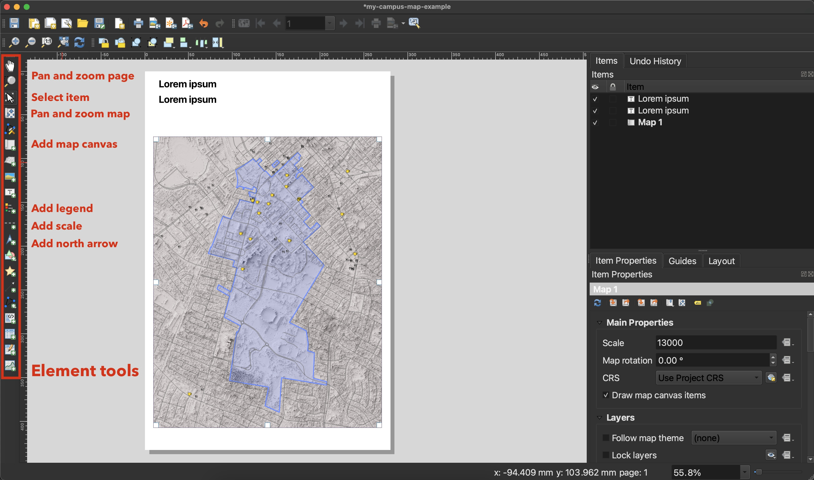

Presentation
Open in new tabPresentation Topics
- Introduction
- Have you started thinking about a final project?
- What you learned in previous modules
- Cartography and cartographic design
- Map elements
- Map layout
- Lab discussion
- Tasks
- Lab
Task
In this task, you will visit UKy’s Gwen Curtis Map Collection and find a map that you think is appealing. You will take a photo of the map, write a few paragraphs using our provided prompts, and post the photograph and response to Canvas.
You must book a time to visit the Map Collection here. There are over 200 slots available in 19 different times, so you should be able to find a convenient time to visit the collection. Sarah Watson, the Map Collection Manager, will guide you through a curated selection of maps and answer questions you might have about one that you find appealing.
When you peruse the collection, look for a map that speaks to you. It could be one that you think is beautiful, effective, or addresses a topic you like. It could be all of these. Then ask: What about the map do you find appealing? Investigate the map’s design. Is it in the use of color, symbols, and fonts? Is it in the illustrations and information around the map and the story they tell? Think about the presentation as a whole: Is it persuasive? Does it make you want to visit the place? Does it make you want to take action?
Sarah Watson, Map Collection Manager, showing a map from the collection.
This task is similar to our previous Maps in the Wild task, but this time, you will be looking at printed maps with a greater variety of purposes and intended audiences.
- Find a map in the Map Collection and photograph it. Make sure to include the entire map and that the photo is well-lit and clear.
- Write a paragraph for each of the following prompts:
-
Describe the map’s purpose and intended audience. For example, is it a tourist map, a political map, or a map for a specific event? Is it a reference map or a thematic map? Is it for a general audience or a particular group of people?
-
Describe what you find appealing about the map. Identify and discuss specific design elements in your response.
-
Is the map effective or persuasive? What works and doesn’t work well?
Did you miss the library visit or want extra credit?
Find a map on David Rumsey Map Collection, export an Extra Large JPEG (it will be in a zip file), download it, and extract the file on your computer. Then, follow the instructions above to write a response to the map.
Submitting the task
Upload your photo and text to the Module 4 task on Canvas by the published due date. (2 points for the photograph and 1 point for each response.) If you do the extra credit, you will receive up to +2 points.
Lab
Cartography is often characterized as the art and science of map making. In previous labs, we’ve addressed the scientific side by making and manipulating data. In this lab, we’ll focus on the artistic side of map making. You will use QGIS to create an effective map with data that you provide or that is found in this lab. In the next module, we’ll dive deeper into the art of map making to make maps that are also persuasive.
Table of Contents
Introduction
Making an effective map depends on understanding its purpose. Maps generally fall into two categories: reference maps and thematic maps. Reference maps are designed to show the location of features and are often used for navigation. Thematic maps are designed to show the spatial distribution of a particular theme or topic. For example, a reference map might show the location of roads, rivers, and trails, while a thematic map might show the population density of a region.
 Reference map example: Norris Watershed Trail Map, Norris, Tennessee
Reference map example: Norris Watershed Trail Map, Norris, Tennessee
 Thematic map example: Kentucky population density, 2020 Census
Thematic map example: Kentucky population density, 2020 Census
After understanding the purpose of your map, you can begin to think about its design. The design of a map is often referred to as its cartographic style, which includes the map’s colors, symbols, and fonts. The goal of cartographic style is to make the map easy to read and understand. Next, we consider the supporting map elements that provide additional context and information about the map. These elements might include the title, legend, scale bar, north arrow, and source attribution. Finally, we consider the map layout, which is the arrangement of the map elements on the page.
We’ll explore these concepts for both reference and thematic maps in the following sections. For a short, friendly guide to the basic principles of map design, check out the Axis Cartography Guide.
Cartographic style & visual variables
When we first start designing maps, we often enjoy fiddling with the map layers’ colors, symbols, and fonts. The key to effective map design is understanding how to use these elements to communicate information. This is where visual variables come in. Visual variables are the visual characteristics of a map layer that can be used to represent different features, themes, or data categories. They primary variables we’ll use in this lab include color, size, and shape.
Primary visual variables: color, size, and shape
Color
For reference maps, we use color to distinguish different types of features. There are established conventions for color schemes. For example, we use blue to show water and green to show land. The exact blue and green colors you use can be highly debated, but the general idea is to use colors that are easy to distinguish and that don’t clash with each other. Another concern is not picking colors for different features that are too similar. What if you used blue for both water and roads? This would make a confusing map for the viewer.
For thematic maps, we often are mapping attributes in a spatial layer and using color show the distribution of values. For example, in a population map we use color to show areas with high and low population counts – light colors mean less and dark colors mean more. This type of mapping is called choropleth mapping.
Picking the right color scheme for your data
When you pick a color scheme, you should consider the type of data you are mapping. If you are mapping a continuous variable like population, you should use a sequential color scheme. If you are mapping a categorical variable like land cover type, you should use a qualitative/categorical color scheme that uses different colors for each category. You should also be mindful of color vision challenges that people can have and use resources to help you pick colors that are accessible to everyone.
ColorBrewer2: color advice for cartography
The ColorBrewer2 website is a great resource for picking color schemes for your maps. It provides color schemes that are colorblind safe, print friendly, and are preinstalled in QGIS.
Size & shape
We use size and shape to show the relative importance of features. For example, we might use a larger circle to show a larger city or thicker line to show the relative importance of a road in a network. These are called graduated symbols in QGIS. We might select different shapes to show a different type of feature. For example, we might use a circle to show a city and a square to show a town. These are called marker symbols in QGIS.
When we combine these visual variables, we create a symbol set that can show a wide variety of features. Strive to a make a unique and unified visual palette – this will take a lot (indeed, a lifetime) of experimentation, but it’s the key for effective map design. You can save these symbol sets in QGIS and reuse them in other maps.

Palette of map symbols
Map elements
Often, we think of map design as the cartographic style and composition of our map layers. However, the map’s design also includes the supporting map elements that help a viewer interpret the map. What if the map didn’t have a title or a legend describing the cartographic style used on the map?
Elements needed on all maps:
-
Title: A title provides the map’s main subject or theme. It’s usually placed at the top of the map and gives the map a clear purpose. A subtitle is sometimes used to elaborate on the map subject. Within these titles, a viewer should have an understanding of the what and where of the map.
-
Legend: The legend explains the symbols, colors, and patterns used on the map to represent different features or categories. Not all layers need to be in the legend. For example, a base map layer like a shaded relief or aerial imagery doesn’t need to be in the legend – it’s usually self-explanatory.
-
Source attribution & date: This element provides information about the sources of the data used to create the map, information about the author, and dates for the map creation and when the data was collected. It ensures transparency and credibility. Some sources of data require exact attribution. For example, the OpenStreetMap data used in this lab requires the following attribution:
© OpenStreetMap contributorsor© OpenStreetMap openstreetmap.org/copyright.
Elements needed on some maps, but especially all reference maps:
-
Scale bar: A scale bar shows the relationship between distances on the map and actual distances on the Earth’s surface. It helps users understand the map’s scale.
-
North arrow: A north arrow indicates the orientation of the map, showing which direction is north. This helps users understand the map’s alignment with the real-world compass directions.
Maps that might not need these elements include small-scale (zoomed out) continental and world maps. Depending on the map’s projection, distance and direction north might be different in different parts of the map. In this case, a scale bar and north arrow would be misleading.
Maps tell stories and often you need to provide additional information to help the viewer understand the story. These elements can be almost anything, from photographs and illustrations to even more maps. The goal with these additions to provide an immersive experience for the viewer.
Optional elements:
-
Narrative text: Long-form text can be used to provide context and background information about the map’s subject. It can be used to develop the map’s story or provide a call to action.
-
Labels: Labels are used to identify and describe geographic features, including place names, cities, rivers, roads, and landmarks.
-
Insets: Insets are small maps, diagrams, illustrations, etc. that provide detailed views of specific areas or features within the main map.
-
Locator map: A locator map is a small map that shows the position of the main map within a larger geographic context.
Map layout
The map layout is the arrangement of the map elements on the page. It should be balanced and uncluttered, with a clear visual hierarchy: the graphical implementation of a ranked order of map elements and cartographic style such that the most important elements have the greatest visual prominence. You could do this simply by using color as shown in this example cautioning boaters about dams on the Kentucky River.
Historical map example: Kentucky River, 1952
The layout should also match the map’s intellectual hierarchy. This is the order in which the viewer should read the presentation. For example, the viewer should first read the title, then the map, and then the legend. In the above example, the legend is a bit hard to locate because it’s not labeled, but the use of the color red helps the viewer find it.
To help with map layout, we can use a grid system. This is a set of guidelines that help us align and arrange the map elements. We compartmentalize the map elements into a grid of rows and columns.
Using a grid system to place map elements
A more dynamic approach to layout is to use a fluid system where the map elements are placed in relation to each other. This technique uses empty space on the page (white or negative space) as a design element. It’s challenging to implement, but it can be more effective for creating a visual hierarchy.
Using a fluid system to place map elements
Ultimately, your choice of cartographic style, supporting map elements, and page layout should help the viewer understand the map’s story. This is the art of map making.
Reference map example
Reference maps are designed to help people locate things. During a long week of exams, you might want to find a coffee shop. In this example, we’ll make a reference map of the University of Kentucky campus showing the nearest coffee shops with data from OpenStreetMap.
We have compiled QGIS projects for this lab with data and example layouts. Your task is to replicate the provided example in a new map layout. First, we need to download and extract the project files.
- Visit Canvas Files and download the file
two-types-of-maps.zip. - Extract the zip file to the class workspace on your computer.
- Open the folder and find the two mapping projects and data.
- Double-click on the reference-map.qgz to open the project in QGIS.
Finding the project files
After you open the file, you should see a map of the University of Kentucky campus with a few layers. The amenities layer is a point layer with attributes for the type of amenity (e.g., coffee shop, restaurant, etc.) which stored in the field called amenity. We want to style this layer to show the coffee shops and restaurants (which could also have coffee).
Categorizing the points based on the attribute amenity
After the points are categorized, we can style them using marker symbols. Select SVG Marker and choose a coffee cup icon for cafe. You can change the size of the icon and the color of the fill and outline. The same approach has been done for the restaurant symbol.
Using SVG markers to symbolize points
Experiment with the colors and sizes of the symbols to make them more distinct. You can also add additional layers to the map. For example, you could add a layer of buildings to the map.
Tip: Before you do a deep dive into a layer’s styling, try making a duplicate of the layer. This way, you can always return to the original layer’s style. To duplicate a layer, right-click on the layer in the Layers panel and select Duplicate. This will create a new layer with the same style as the original and is not enabled by default.
Note: If you mess up and can’t return to the original styles, you can always download the original project file again.
Filtering the points
Did these points come to us with just cafes and restaurants? No, they came with all sorts of amenities. We can filter the points to show only the cafes and restaurants. To do this, we right-click the layer and select Filter.
Filtering points by type of amenity
In the Query Builder window, we can write a query to filter the points. We want to show only the cafes and restaurants, so we can write a query that says: show the points where the amenity is cafe or restaurant.
Query Builder window to filter points
You can use the Operator buttons to help you write the query. You can also type the query directly into the Expression box. The query we want is:
"amenity" = 'cafe' or "amenity" = 'restaurant'
-- the same query can be written as
"amenity" IN ('cafe', 'restaurant')
Try duplicating the layer and using the query to filter the points. In the Query Builder window click the Clear to remove the query and show all the points. Then, click amenity in the Fields list to add it to the Expression box. Then, click = in the Operators list to add it. Finally, double-click cafe, or whatever value you want, in the Values box and click OK. This will show only the cafes.
Video: Filtering data for mapping (11 min)
What if you wanted to map something other than cafes and restaurants? You could use the same approach to filter the points. In this video, we’ll show you how to filter the points to show other amenities. The last three minutes explores how to use QGIS plugins to harvest data from OpenStreetMap.
Map layout
After you have styled your layers, we need to create a new layout and add the map and map elements. First, let’s inspect the example layout. In the QGIS menus, click Project > Layouts > campus. This will open the the layout in a new window.
- Open the campus layout.
- Right-click the page and select Page Properties.
- Note in the Item Properties tab that page is 11 x 17 inches. This is the finished size of the map. It can be changed here, too.
Inspecting the Page Properties
Ok, let’s create a new layout and change its default page size.
- In the QGIS menus, click Layout > New Layout or select the menu button that does the same and give the layout an appropriate name. This will open the the layout in a new window.
- Click the empty page and change the Page Size properties to 11 x 17 inches in the Item Properties tab.
Creating a new layout
Changing the page size
Now use the Elements Toolbox to add the individual elements to the map.
- Add a map, legend, title & subtitle, attribution, scale bar, and north arrow to the layout.

Adding the map elements
Video: Creating a map layout in QGIS (14 min)
Because the manual layout process is a visual task, we’ve created a video that walks through the steps. You will need to practice these tools to discover your preferred design approach.
Tip: Use a mouse with a scroll wheel and left- & right-click buttons to best position the map elements. You can also use the arrow keys to nudge the elements. Go pro and use a dual-monitor setup to see the map and layout at the same time.
- Watch the below video.
Thematic map example
Thematic maps are designed to help people compare and contrast the spatial distribution of a particular theme or topic. In this example, we’ll make a thematic map of the population density of US counties using data from the U.S. Census Bureau.
- Save your reference map example.
- Find the thematic-map.qgz project file in the two-types-of-maps folder and double-click to open it in QGIS.
Thematic map showing population density by county
Note in the Layer Styling panel we use a graduated color style to show the population density of each county. The color scheme, a.k.a. color ramp, is a sequential color scheme that goes from light to dark representing low to high population density.
Normalizing the data
One the problems of mapping the quantity of something by a polygon is that the polygons have different sizes. For example, a large county can simply contain more people than smaller counties. To account for this, we can normalize the population by dividing the raw count of population by the area of the county. This will give us the population density of each county.
Since the attribute table has both raw population count and the area for each county, we can use the below expression for the Value field in the Graduated style.
pop_count / square_miles
You can paste this directly into the Value field or use the Expression Builder (button on the right) to create the expression.
Using a math expression in the Value field to calculate people per square mile
Normalizing the data is a common technique in choropleth mapping. It allows us to compare the distribution of a theme across different sized areas. For example, we can compare the population density of the relatively smaller counties in Kentucky to counties in Arizona.
Tip: If you have a raw count of something by polygon, normalize the data by dividing the raw count by the area of the polygon. This will give you the count per unit area.
Classification methods
A standard approach to visualizing quantities in choropleth mapping is to use a classification method. This method divides the range of values into 4-7 classes or categories, which makes it easier to interpret the map. If you use to many classes, the individual classes will be hard to read. If you use too few classes, the map will be too simple and not show a meaningful distribution of values.
We have three primary classification methods to choose from in QGIS: Equal Count (Quantile), Equal Interval, and Natural Breaks (Jenks). Each method has its own strengths and weaknesses.
Three classification methods
-
Equal Count (Quantile): This method puts the same number of features in each class. For example, there will be the same number of counties in the lowest class as the highest class. This method ensures that all classes are represented on the map. This is the default method in QGIS.
-
Equal Interval: This method divides the range of values into equal intervals. For example, if the range of values is 1 to 100, the values will be divided into 5 intervals of 20. If the data clusters around a few values, this method will not show the distribution of values across the range.
-
Natural Breaks (Jenks): This method uses a statistical algorithm to find natural breaks in the data. This method is useful for data that clusters around a few values. It can also be used to find outliers in the data.
Now let’s experiment with the classification methods. In the Layer Styling panel, change the number of classes and the classification method to see how it affects the map.
- Right-click the Population per square mile layer and select Duplicate as a backup.
- Select the original layer in the Layers panel. In the Layer Styling panel’s classification Mode drop-down, select the each of the three methods discussed earlier.
- Experiment with the number of classes.
Which method gives the best interpretation of population density? Because most counties have a low population density, with a few very high density counties, the Equal Count method does a good job of showing the distribution of values. However, the the method and number of classes you choose depends on the data and the story you want to tell.
Finally, we can create a custom classification or tweak the class values to make them more readable. For example, we can change the class values to round numbers.
- Double-click each class value and change it to a round number that is close to the original value.
Tweaking the class range of values
Video: Practice classification methods in QGIS (11 min)
This short video explores different classification methods and how to tweak the class values.
Map layout
Let’s finish up the lab by practicing making a map layout. We’ll use the same approach as the reference map example, but we’ll use a fluid design to place the map elements.
Practice making a thematic map layout
- Create a new map layout and add the map, title & subtitle, legend, and source of data.
Assignment
The Bluegrass Cartography Guild has commissioned you to make a map for their upcoming conference in Lexington. It can be a reference map showing the locations of things to do around campus or a thematic map showing the distribution of population in a state of your choice. You can use data from this lab or find your own. The map should be 11 x 17 inches and include a title, legend, and attribution. You should add additional map elements as needed.
They also announced another option: you can surprise them with a map of your own design. If you choose this option, you should still follow the requirements below.
Save your QGIS project often via the menu item Project > Save.
Deliverables
Please follow these requirements for the assignment:
- Add at least two layers to the map. It you make a reference map, symbolize at least one layer to show different categories. If you are making a thematic map, a.k.a. choropleth map, classify the data appropriately with 5-7 classes and a sequential color scheme. (3 points)
- Add a title & subtitle, a legend, and text describing the source of the data and the author. Make sure the legend uses descriptive labels. (3 points)
- If the map is a reference map, include a scale bar and north arrow. (1 point)
- Design an 11 x 17 inch map layout using a grid or fluid system. Make sure the layout is balanced, has a visual hierarchy, and the page elements are not overlapping. Ensure that the text free of typos and grammatical errors. (2 point)
- Export the layout as a GeoPDF file.
- Name the file
bcg-linkblue.pdfand replacelinkbluewith your linkblue name. For example,bcg-bileil01.pdf. - Your TA will add one additional challenge. (1 point)
Submitting the assignment
Upload your PDF file to the Module 4 assignment on Canvas by the published due date.
Happy cartography!
.